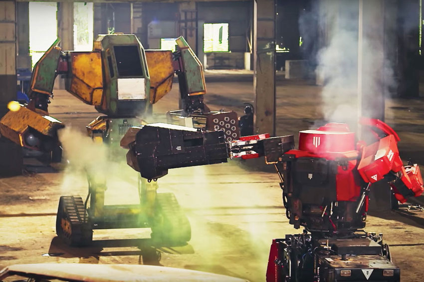

ТОП-7 ФАКТОВ О РОБОТАХ
Робототехника — отдел прикладной науки, который занимается проектированием, производством и применением автоматизированных технических систем — роботов. Робот — это программируемое механическое устройство, способное действовать без помощи человека. Роботы бывают манипуляционными и мобильными. За исполнение действий манипуляционного робота отвечает манипулятор с несколькими степенями подвижности и устройство программного обеспечения. Манипуляционные роботы получили большое распространение в машиностроительных и приборостроительных отраслях. Мобильный робот более подвижен, чем манипуляционный, поскольку у него есть движущееся шасси с автоматически управляемыми приводами — «мышцами» роботов.
Совершенно незаметно для себя человечество вошло в эру «умных машин». Одни люди видят в роботах угрозу будущему нашей цивилизации, другие считают, что дальнейшее развитие без них невозможно. Кто прав – покажет время, но в любом случае неплохо знать, с чем мы имеем дело. За почти столетнюю историю отношений между человеком и машиной случалось многое, поэтому представляем вам самые интересные факты о роботах.
Факт 1: слово «робот» – чешского происхождения. Оно происходит от слова robota, что в переводе означает тяжелый труд, каторгу. Впервые это понятие употребил в своей научно-фантастической пьесе «R.U.R» (1920 г.) чешский писатель Карел Чапек. В ней оно обозначало искусственно созданных органических людей, используемый человечеством для выполнения особо тяжелой и опасной работы. К слову, это было одно из первых произведений, в которых поднималась тема массового восстания «роботов».
Факт 2: очень похожие на людей роботы пугают сильнее непохожих. В 1978 году японский инженер в области робототехники Масахиро Мори открыл интересную закономерность: симпатия людей к машинам росла по мере «очеловечивания» тех до определенного предела – затем она резко падала и становилась снова высокой только для неотличимых от нас моделей. На графике эта зависимость образовывала возрастающую кривую с резким «оврагом», за что получила название «зловещая долина». Точные причины такого феномена не установлены. По наиболее распространенной версии похожий на человека робот, имеющий небольшой изъян во внешности, мимике и движениях, воспринимается нами как подделка или оживленный труп.
Факт 3: роботоподобные механизмы – очень давнее изобретение. Первые прообразы роботов (автоматоны) появились еще в эпоху Просвещения. Исторические факты свидетельствуют о развитой в те времена технологии создания зоо- и антропоморфных устройств на основе часового механизма. Более того, некоторые модели могли быть запрограммированы на совершение определенных действий. Так, созданный в 18 веке часовщиком Жаком Дро «Писатель» имел вращающийся диск с выдвижными колышками, комбинируя которые можно было заставлять его писать небольшие тексты с различным содержанием.
Факт 4: единичные «восстания машин» – уже реальность. В 1979 году однотонная роботизированная рука убила работника завода Ford, когда он попытался «помочь» ей переместить материалы. Другой случай произошел совсем недавно, в 2015 году – на заводе Volkswagen в Германии, когда промышленный робот раздавил сотрудника персонала о стальную плиту. Примечательно, что об этом инциденте сообщила журналистка по имени Сара О’Коннор, чем вызвала бурную реакцию у поклонников серии фильмов «Терминатор». В защиту роботов надо сказать, что в обоих случаях причиной несчастного случая стало нарушение человеком техники безопасности.
Факт 5: состоялся первый в истории бой человекоподобных роботов. 17 октября 2017 года на территории заброшенного японского завода произошла схватка двух больших механизмов, управляемых людьми. Страну Восходящего Солнца представлял робот Kuratas от японской компании Suidobashi Heavy Industry, за США выступали Iron Glory и Eagle Prime от американской MegaBots. Машины были вооружены манипуляторами, мощными таранами, стреляющей краской пушкой, бензопилой и другими приспособлениями. Однако, несмотря на такое вооружение, первая схватка «огромных боевых человекоподобных роботов» произошла донельзя скучно, так что фанаты мехи и серии Battletech будут разочарованы.
Факт 6: первый робот получил гражданские права. Законодательные инициативы, регулирующие этику в области робототехники, разрабатываются уже достаточно давно в ЕС, Японии, Южной Корее, России и других развитых странах. Однако впервые гражданские права были предоставлены роботам совсем недавно в Саудовской Аравии. На конференции в Эр-Рияде 26 октября 2017 года андроиду (гиноиду) по имени София было предоставлено гражданство этой страны, о чем она тут же поблагодарила власти. Любопытно, что в этом мусульманском государстве категорически запрещено становится гражданами иностранным рабочим, составляющим треть населения.
Факт 7: появилась первая робо-рок-группа. Инженеры из Германии создали необычный музыкальный квартет, состоящий из роботов. Четырехрукий барабанщик, гитарист с 78-пальцами, басист на гусеничной платформе и небольшой механический помощник всем своим видом оправдывают жанр хэви-метал. Коллектив, названный «Compressorheads», впервые вышел на сцену вместе с группой RHCP и поразил зрителей не только навыками игры, но и традиционно «роковой» подачей. Сегодня в его репертуаре каверы на таких монстров, как Led Zeppellin, Metallica, а также собственные произведения.
Эти и другие интересные факты про роботов однозначно свидетельствуют, что «разумные машины» становятся гораздо большим, чем просто рабочими инструментами и помощниками. В очередной раз мы наблюдаем, как вымысел писателей-фантастов незаметно превращается в самую будничную реальность.
- ua.jooble.org
- hi-news.ru
- robo-sapiens.ru
- boteon.com